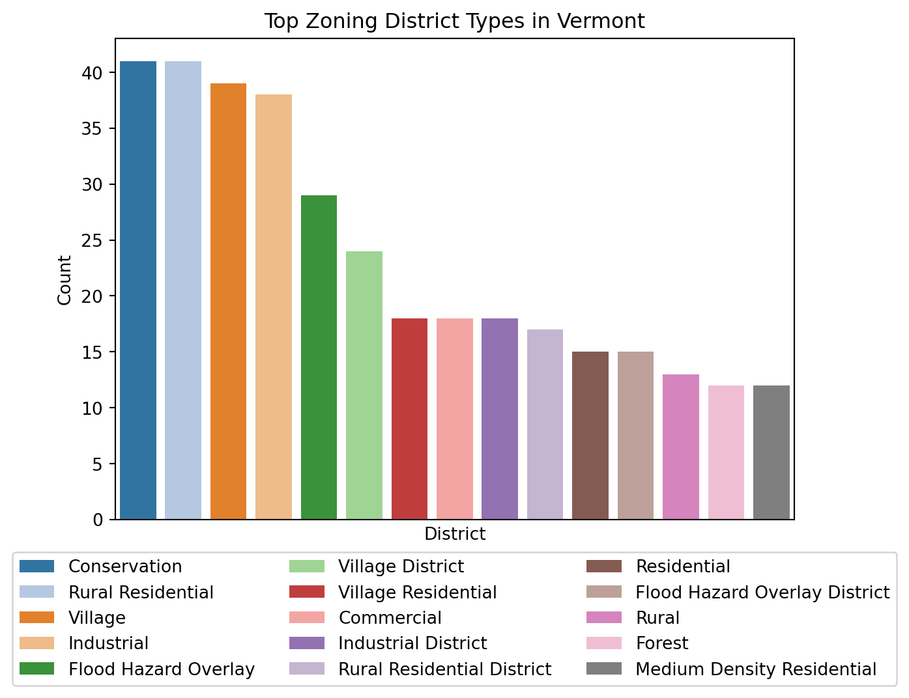

Introduction to data engineering with SQL/duckdb in Quarto notebooks
Author
Fitz Koch
Published
June 2, 2026
Overview
The point of this project is to get some basic familiarity with qmd files, duckdb, and SQL if you don’t already have any.
Please complete this project in order. Spend no more than 12-15 hours on it unless you’re having a blast or answering questions that are really interesting to you. You’re getting paid to learn something!
Rules:
Remember: the point is learning and ownership. This project is not for a grade, it’s for you to get ready for the summer, learn a lot, have fun, and hopefully build a resume. You’ll get paid either way, so make the time worth something to yourself.
DO NOT copy and paste anything from AI, or use any AI learning tool directly.
FEEL FREE to ask AI any questions, carefully read its answers, including reading functions that it wrote, and then reimplement them, or the logic behind them, in your code.
Have fun!
Steps
0: Repo Setup
Create a github repository named [your_name]-okemo-data.
Make the repo public, and share it with me.
Add a README, explaining what the project is, if you haven’t already, and commit it.
For all future steps, git commit at the end of every step where it makes sense. Include a message saying what you’ve done. At the end of each section, git rebase and squash, add, and push. Ask an LLM about what rebase is and why it’s useful.
1: Code setup
Note, all of the below is operating system sensitive. Feel free to ask AI to help you with it – but do the steps yourself, and pay attention to what’s going on!
Get a package manager of some sort: conda or uv.
Create a python environment with duckdb in it. Add whatever else you need when you need it.
Download quarto and get it connected to your terminal.
If you don’t already, get an IDE code editor (VS code, X Code, Sublime, etc.)
If you’re married to VIM, or whatever, that’s okay, so long as it doesn’t disrupt your work. Note that vscode has a VIM method.
Add ruff. It won’t work in quarto, but you need to do it sometime.
Create a Data folder and store the data in there. Make sure you specify that it is raw.
Create a folder for your .qmd files and create an engineering.qmd file in it.
Create a yaml header for your Quarto document. Look at the code in this repository for some ideas.
Start coding! Begin by moving to the root and importing with code like this:
import osfrom pathlib import Pathimport duckdb_project_root = Path.cwd()whilenot (_project_root /".git").exists(): _project_root = _project_root.parentif _project_root == _project_root.parent:raiseRuntimeError(".git not found — are you inside the repo?")os.chdir(_project_root)print(os.getcwd())
/home/fitsl/workbench/verso_okemo_onboarding
Write, in plain text, what this code does, above it. Do this for all future cells. You don’t have to go super detailed. Explain like I’m curious but not technical. Note that the code in this is turned off due to the yaml piece at the beginning (see the code for details).
If this code doesn’t make sense you or doesn’t work, just use os.chdir("dir") to your repo root. Note that code can hang on the above, so if things are taking a long time, that’s a likely culprit.
Get the dataset into memory using pandas.
Do the same using duckdb. You will have to use code that looks something like:
from pathlib import Path path = Path("Data/info.parquet")con = duckdb.connect()con.execute(f""" CREATE OR REPLACE VIEW zoning AS SELECT * FROM read_parquet('{path}')""")df = con.execute("SELECT * FROM zoning").df()df.head()
OBJECT_ID
County
RPC
Municipal_Name
GEO_ID
District_Name
Abbreviated_District_Name
District_Type
Elderly_Housing_District
Bylaw_Date
District_Mapped
Overlay_District
Base_Density
Affordable_Housing_District
Notes
Acres
0
1691
Windham
WRC
Rockingham
5002560250
Riverfront 14
R-14
Nonresidential
No
NaT
Yes
No
NaN
No
Multifamily Dwellings Could Be Included As Acc...
25.152489
1
1682
Windham
WRC
Rockingham
5002560250
Central Business
Cb-7
Mixed
No
NaT
Yes
No
NaN
No
None
19.306718
2
1686
Windham
WRC
Rockingham
5002560250
Industrial 14
Ind-14
Nonresidential
No
NaT
Yes
No
NaN
No
Multifamily Dwellings Could Be Included As Acc...
46.732680
3
557
Windsor
MARC
Springfield
5002769550
Exit Seven District
E7
Nonresidential
No
NaT
Yes
No
NaN
No
None
27.471788
4
570
Windsor
MARC
Springfield
5002769550
Riverbank Protection Overlay District
Rpd
Overlay
No
NaT
Yes
No
NaN
No
None
1286.104916
Note that the code instead the strings con.execute(" ") is sql. If you don’t know any sql, watch a youtube video, or ask an AI, or whatever helps you learn. It’s designed to be readable, but it can still be tricky sometimes. SQL keywords are generally in all-caps, and table/var names are in lower-case.
Using both pandas and SQL, show that you know how to examine the data:
get the names of the columns (hint, use SQLs “DESCRIBE”)
get the unique value counts for one or two of the columns
clean or reformat the data in some way. If nothing jumps out to you that can be cleaned, just doing something random (split columns, add a dummy variable, pivot form long to wide, etc.)
discuss your general sense of the data
make a few basic plots using matplotlib or seaborn. Nothing fancy, and very low level and summarizing.
Remember to articulate before each cell block what you want and expect it to do. If you’re better at one language or the other, do that first and then work from that as an example.
Split the data into separate .parquet files by first creating views or tables using some portions of the columns, then save those views to parquet files. Make sure you don’t overwrite your existing data files; these are your clean tables. Use easily parseable names.
What’s the meaningful difference between an SQL view and a table? Why would we want one or the other? Put your answer in plain text in your qmd.
3. Data Analysis and Report
Create a new report.qmd file with the same initial structure (yaml, root, imports) as engineering.qmd.
Make a db connection to your three parquet files. Name them after what you parse in.
Now you get to actually ask some questions of your data. Pick two or three things you’re genuinely curious about. Before each cell, write in plain text what question you’re asking and what you expect to find. Then write code to answer it, getting the data both with pandas and with SQL. Note if there are any places that one or the other seems more or less difficult. Some ideas:
group by a category and compare averages, counts, or sums across groups
filter down to an interesting subset and see how it differs from the whole
Example to see the number of rows for each value in a column District_Name:
df = con.execute("""--sql SELECT District_Name as District, COUNT(*) AS Count, FROM zoning GROUP BY District_Name ORDER BY COUNT(*) DESC LIMIT 15""").df()df.head()
District
Count
0
Conservation
41
1
Rural Residential
41
2
Village
39
3
Industrial
38
4
Flood Hazard Overlay
29
Make a few plots that tell a story. Use matplotlib or seaborn. Aim for 2-4 plots that each make a point. For each one:
say in plain text what the plot is meant to show before you make it
give it a real title, axis labels, and legend
write a sentence or two after it on what you actually see, and whether it matched what you expected
Example plot to visualize the above:
import seaborn as sns import matplotlib.pyplot as plt fig, ax = plt.subplots()sns.barplot(data=df, x="District", y="Count", hue="District", ax=ax, palette="tab20", legend=True)plt.title("Top Zoning District Types in Vermont")ax.set_xticks([])plt.legend(loc='upper center', bbox_to_anchor=(0.5, -0.05), ncol=3)plt.show()

Write a short conclusion. What did you learn about the data? What would you look at next if you had more time? What surprised you? No need to dazzle here, just be honest and clearly communicative.
4. Publish
The goal is a small github.io website with your rendered .qmd pages, plus a downloadable pdf of your report.
Add a _quarto.yml project file at the root that builds a website. Look at Quarto’s website docs – you want a project: type: website and a navbar linking your engineering.qmd and report.qmd pages. Ask AI to explain any field you don’t recognize, then write it yourself. See the _quarto_yml in this repo if you get stuck.
Configure your report.qmd to also render to pdf. You’ll add format: with both html and pdf to its yaml header. You may need a LaTeX install – quarto install tinytex is the easy path. Add a link on your site so people can download the pdf. If this proves impossible, that’s also fine.
Render the whole site locally with quarto render and open it in your browser. Fix anything that looks broken. Make sure code, plots, and the pdf link all work.
Publish to GitHub Pages. The simplest way is to go to settings in github browser, then pages, then deploy from a branch. Read what it prints; it’ll tell you your https://[your_name].github.io/[your_name]-okemo-data URL.
Put that live URL at the top of your repo’s README, and share it with me.